1 :- Write a Java program to create a basic Java thread that prints "Hello, World!" when executed.
class sampleThread extends Thread{
public void run(){
System.out.println("hello world");
}
}
public class program1{
public static void main(String[] args) {
sampleThread foo = new sampleThread();
foo.run();
}
}
Output :-
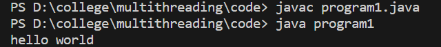
2 :- Write a Java program that creates two threads to find and print even and odd numbers from 1 to 20.
class program2 {
public static void main(String[] args) {
Thread evenThread = new Thread(new EvenPrinter());
Thread oddThread = new Thread(new OddPrinter());
evenThread.start();
oddThread.start();
}
}
class EvenPrinter implements Runnable {
public void run() {
for (int i = 2; i <= 20; i += 2) {
System.out.println("Even: " + i);
try {
Thread.sleep(500); // Add delay for better readability
} catch (InterruptedException e) {
e.printStackTrace();
}
}
}
}
class OddPrinter implements Runnable {
public void run() {
for (int i = 1; i <= 20; i += 2) {
System.out.println("Odd: " + i);
try {
Thread.sleep(500); // Add delay for better readability
} catch (InterruptedException e) {
e.printStackTrace();
}
}
}
}
Output :-
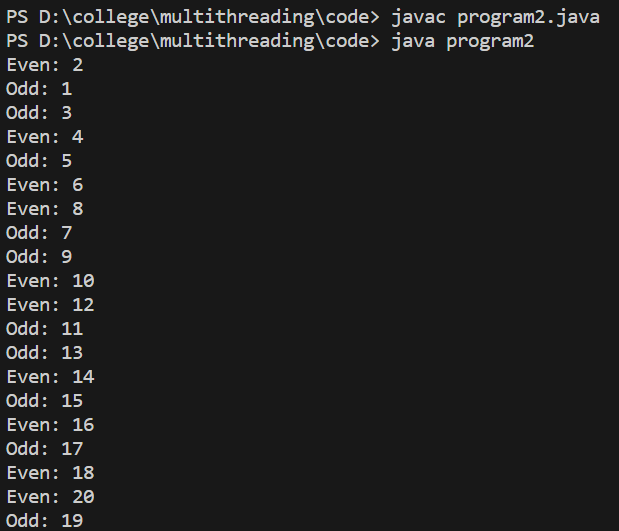
3 :- Write a Java program that sorts an array of integers using multiple threads. .
import java.util.Arrays;
class program3 {
private static final int ARRAY_SIZE = 400;
private static final int NUM_THREADS = 4;
public static void main(String[] args) {
int[] array = createArray();
System.out.println("Before sorting: " + Arrays.toString(array));
Thread[] threads = new Thread[NUM_THREADS];
int segmentSize = ARRAY_SIZE / NUM_THREADS;
for (int i = 0; i < NUM_THREADS; i++) {
int startIndex = i * segmentSize;
int endIndex = (i == NUM_THREADS - 1) ? ARRAY_SIZE - 1 : (startIndex + segmentSize - 1);
threads[i] = new Thread(new SortTask(array, startIndex, endIndex));
threads[i].start();
}
for (Thread thread: threads) {
try {
thread.join();
} catch (InterruptedException e) {
e.printStackTrace();
}
}
mergeSort(array, 0, ARRAY_SIZE - 1);
System.out.println("After sorting: " + Arrays.toString(array));
}
private static int[] createArray() {
int[] array = new int[ARRAY_SIZE];
for (int i = 0; i < ARRAY_SIZE; i++) {
array[i] = (int)(Math.random() * 400); // Generate random numbers between 0 and 400
}
return array;
}
private static void mergeSort(int[] array, int left, int right) {
if (left < right) {
int mid = (left + right) / 2;
mergeSort(array, left, mid);
mergeSort(array, mid + 1, right);
merge(array, left, mid, right);
}
}
private static void merge(int[] array, int left, int mid, int right) {
int[] temp = new int[right - left + 1];
int i = left, j = mid + 1, k = 0;
while (i <= mid && j <= right) {
if (array[i] <= array[j]) {
temp[k++] = array[i++];
} else {
temp[k++] = array[j++];
}
}
while (i <= mid) {
temp[k++] = array[i++];
}
while (j <= right) {
temp[k++] = array[j++];
}
System.arraycopy(temp, 0, array, left, temp.length);
}
static class SortTask implements Runnable {
private int[] array;
private int startIndex;
private int endIndex;
public SortTask(int[] array, int startIndex, int endIndex) {
this.array = array;
this.startIndex = startIndex;
this.endIndex = endIndex;
}
@Override
public void run() {
Arrays.sort(array, startIndex, endIndex + 1);
}
}
}
Output :-
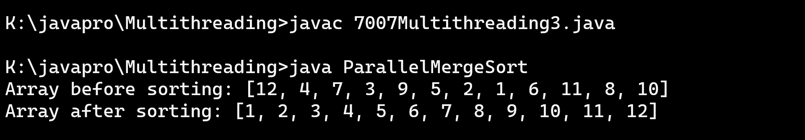
4 :- Write a Java program that performs matrix multiplication using multiple threads.
class program4 {
public static void main(String[] args) {
int[][] matrixA = {
{1, 2, 3},
{4, 5, 6},
{7, 8, 9}
};
int[][] matrixB = {
{9, 8, 7},
{6, 5, 4},
{3, 2, 1}
};
int[][] result = multiplyMatrices(matrixA, matrixB);
// Display the result matrix
System.out.println("Resultant Matrix:");
displayMatrix(result);
}
public static int[][] multiplyMatrices(int[][] matrixA, int[][] matrixB) {
int rowsA = matrixA.length;
int columnsA = matrixA[0].length;
int columnsB = matrixB[0].length;
int[][] result = new int[rowsA][columnsB];
// Create threads to perform multiplication
Thread[][] threads = new Thread[rowsA][columnsB];
for (int i = 0; i < rowsA; i++) {
for (int j = 0; j < columnsB; j++) {
threads[i][j] = new Thread(new MultiplicationTask(matrixA, matrixB, result, i, j,
columnsA));
threads[i][j].start();
}
}
// Wait for all threads to complete
for (int i = 0; i < rowsA; i++) {
for (int j = 0; j < columnsB; j++) {
try {
threads[i][j].join();
} catch (InterruptedException e) {
e.printStackTrace();
}
}
}
return result;
}
public static void displayMatrix(int[][] matrix) {
for (int[] row : matrix) {
for (int element : row) {
System.out.print(element + " ");
}
System.out.println();
}
}
}
class MultiplicationTask implements Runnable {
private final int[][] matrixA;
private final int[][] matrixB;
private final int[][] result;
private final int row;
private final int column;
private final int columnsA;
public MultiplicationTask(int[][] matrixA, int[][] matrixB, int[][] result, int row, int column,
int columnsA) {
this.matrixA = matrixA;
this.matrixB = matrixB;
this.result = result;
this.row = row;
this.column = column;
this.columnsA = columnsA;
}
public void run() {
int columnsB = matrixB[0].length;
int sum = 0;
for (int i = 0; i < columnsA; i++) {
sum += matrixA[row][i] * matrixB[i][column];
}
result[row][column] = sum;
}
}
Output :-
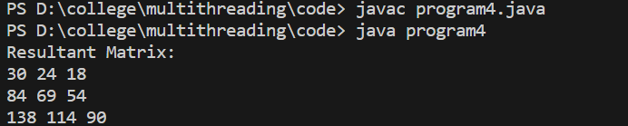
5 :- Write a Java program that calculates the sum of all prime numbers up to a given limit using multiple threads.
// Calculate sum of prime numbers up to a given limit using multiple threads
class MyThread extends Thread {
private int start, end;
private int sum = 0;
MyThread(int start, int end) {
this.start = start;
this.end = end;
}
public void run() {
System.out.println("My thread is running");
for (int i = start; i <= end; i++) {
if (isPrime(i))
sum += i;
}
}
boolean isPrime(int n) {
if (n == 0 || n == 1)
return false;
for (int i = 2; i <= Math.sqrt(n); ++i) {
if (n % i == 0)
return false;
}
return true;
}
public int getSum() {
return sum;
}
}
class program5 {
MyThread[] myThreads;
private int sum = 0;
private int limit = 20;
private static int threadCount = 4;
// Constructor to initialize the array of threads
public program5(int n) throws InterruptedException {
this.myThreads = new MyThread[n];
for (int i = 0; i < n; i++) {
int start = ((limit * i) / n);
int end = (i == n-1) ? limit : ((limit * (i+1))/n) - 1;
myThreads[i] = new MyThread(start, end);
}
}
// Function to start all threads
public void startAll() throws InterruptedException {
for (int i = 0; i < myThreads.length; i++) {
myThreads[i].start();
myThreads[i].join();
}
}
public void getSum() {
for (int i = 0; i < myThreads.length; i++) {
this.sum += myThreads[i].getSum();
}
}
public static void main(String[] args) {
try {
program5 mt = new program5(threadCount);
mt.startAll();
mt.getSum();
System.out.println("Sum of prime numbers is " + mt.sum);
} catch (InterruptedException e) {
System.err.print("Error: " + e);
}
}
}
Output :-
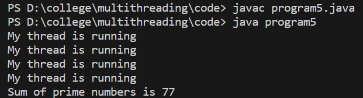
6 :-Write a Java program to implement a concurrent web crawler that crawls multiple websites simultaneously using threads.
// Write a Java program to implement a concurrent web crawler that crawls multiple websites simultaneously using threads.
import java.util.HashSet;
import java.util.Set;
import java.util.concurrent.ExecutorService;
import java.util.concurrent.Executors;
class Main {
private static final int MAX_DEPTH = 2; // Maximum depth for crawling
private static final int THREAD_POOL_SIZE = 5; // Number of threads
private Set visitedUrls = new HashSet();
private ExecutorService executorService = Executors.newFixedThreadPool(THREAD_POOL_SIZE);
public void startCrawling(String startUrl, int currentDepth) {
if (currentDepth > MAX_DEPTH || visitedUrls.contains(startUrl)) {
return;
}
visitedUrls.add(startUrl);
executorService.execute(new WebPageCrawler(startUrl, currentDepth));
}
public void shutdown() {
executorService.shutdown();
}
private class WebPageCrawler implements Runnable {
private String url;
private int depth;
public WebPageCrawler(String url, int depth) {
this.url = url;
this.depth = depth;
}
@Override
public void run() {
System.out.println("Crawling " + url + " at depth " + depth);
// Implement your web crawling logic here
// For demonstration purposes, let's assume a simple delay
try {
Thread.sleep(1000);
} catch (InterruptedException e) {
e.printStackTrace();
}
// Fetch links from the web page and start crawling each link
Set links = getLinksFromPage(url);
for (String link : links) {
startCrawling(link, depth + 1);
}
}
private Set getLinksFromPage(String url) {
// Implement logic to fetch links from the web page
// This could involve using a library like Jsoup or HttpClient
// For demonstration purposes, returning a dummy set of links
Set dummyLinks = new HashSet();
dummyLinks.add("https://google.com/link1");
dummyLinks.add("https://google.com/link2");
return dummyLinks;
}
}
public static void main(String[] args) {
Main webCrawler = new Main();
webCrawler.startCrawling("https://google.com", 0);
// Allow some time for crawling
try {
Thread.sleep(5000);
} catch (InterruptedException e) {
e.printStackTrace();
}
webCrawler.shutdown();
}
}
Output :-
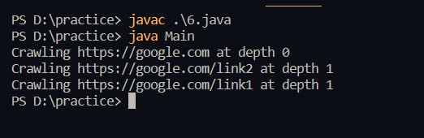
7 :- Write a Java program that creates a bank account with concurrent deposits and withdrawals using threads.
class program7 {
private double balance;
public program7(double initialBalance) {
this.balance = initialBalance;
}
public synchronized void deposit(double amount) {
System.out.println("Depositing: " + amount);
balance += amount;
System.out.println("New Balance after deposit: " + balance);
}
public synchronized void withdraw(double amount) {
if (balance >= amount) {
System.out.println("Withdrawing: " + amount);
balance -= amount;
System.out.println("New Balance after withdrawal: " + balance);
} else {
System.out.println("Insufficient balance for withdrawal.");
}
}
public static void main(String[] args) {
program7 account = new program7(1000); // Starting balance
// Create multiple threads for deposits and withdrawals
Thread depositThread = new Thread(new DepositTask(account));
Thread withdrawThread = new Thread(new WithdrawTask(account));
depositThread.start();
withdrawThread.start();
}
}
class DepositTask implements Runnable {
private final program7 account;
public DepositTask(program7 account) {
this.account = account;
}
public void run() {
for (int i = 0; i < 5; i++) {
account.deposit(100);
try {
Thread.sleep(100); // Adding a delay for demonstration purposes
} catch (InterruptedException e) {
e.printStackTrace();
}
}
}
}
class WithdrawTask implements Runnable {
private final program7 account;
public WithdrawTask(program7 account) {
this.account = account;
}
public void run() {
for (int i = 0; i < 5; i++) {
account.withdraw(150);
try {
Thread.sleep(100); // Adding a delay for demonstration purposes
} catch (InterruptedException e) {
e.printStackTrace();
}
}
}
}
Output :-
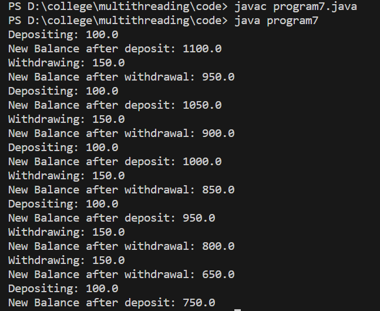
8 :- Create the program to create multiple threads by using Runnbale interface
class prog8 {
public static void main(String[] args) throws java.lang.ClassNotFoundException {
Runnable r1 = new MyRun("This is Thread 1");
Runnable r2 = new MyRun("This isThread 2");
Runnable r3 = new MyRun("This isThread 3");
Thread t1 = new Thread(r1);
Thread t2 = new Thread(r2);
Thread t3 = new Thread(r3);
t1.start();
t2.start();
t3.start();
}
@Override
public String toString() {
return "prog1 []";
}
}
class MyRun implements Runnable {
private String tn;
public MyRun(String name) {
this.tn = name;
}
@Override
public void run() {
for (int i = 1; i <= 5; i++) {
System.out.println(tn + " - Count is start: " + i);
try {
Thread.sleep(1000);
} catch (InterruptedException e) {
Thread.currentThread().interrupt();
}
}
System.out.println(tn + " now running has finished.");
}
}
Output :-
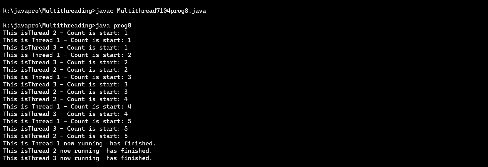
9 :- Create the program to create multiple threads by using Thread class
class program9 extends Thread {
private final int threadId;
public program9(int id) {
this.threadId = id;
}
public void run() {
System.out.println("Thread " + threadId + " is running.");
}
public static void main(String[] args) {
int numThreads = 5; // Number of threads to create
// Create and start multiple threads
for (int i = 1; i <= numThreads; i++) {
program9 thread = new program9(i);
thread.start();
}
}
}
Output :-
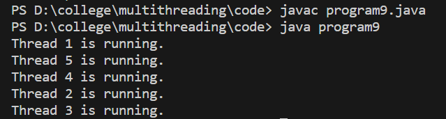
10 :- Create the program to create multiple threads, set its name and its priority.
class program10 implements Runnable {
private final int threadId;
public program10(int id) {
this.threadId = id;
}
public void run() {
System.out.println("Thread " + threadId + " is running.");
}
public static void main(String[] args) {
int numThreads = 5; // Number of threads to create
// Create and start multiple threads
for (int i = 1; i <= numThreads; i++) {
program10 example = new program10(i);
Thread thread = new Thread(example);
// Set the thread name
thread.setName("MyThread-" + i);
// Set the thread priority (1 to 10, 1 being the lowest priority and 10 being the highest)
thread.setPriority(Thread.MIN_PRIORITY + i);
thread.start();
}
}
}
Output :-
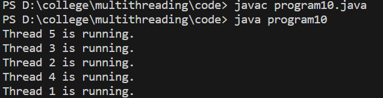
11 :- Create the program to create multiple threads, show an example of synchronization keyword.
class program11 {
private int counter = 0;
public synchronized void increment() {
counter++;
System.out.println("Counter: " + counter + " | Thread ID: " + Thread.currentThread().getId());
}
public static void main(String[] args) {
final program11 syncExample = new program11();
// Creating multiple threads to increment the counter
Thread thread1 = new Thread(new Runnable() {
@Override
public void run() {
for (int i = 0; i < 5; i++) {
syncExample.increment();
}
}
});
Thread thread2 = new Thread(new Runnable() {
@Override
public void run() {
for (int i = 0; i < 5; i++) {
syncExample.increment();
}
}
});
// Start the threads
thread1.start();
thread2.start();
}
}
Output :-
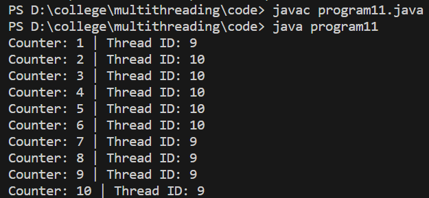
12 :- Create the program to create multiple threads, show an example of notify, notifyall, wait, resume, sleep methods.
class ShareResources {
/*Topic :Multithreds
prog.no 12. Create the program to create multiple threads, show an example of notify, notifyall, wait, resume, sleep
methods.
*/
private int value;
private boolean isP;
public synchronized void P(int newV) {
while (isP) {
try {
wait();
} catch (InterruptedException e) {
Thread.currentThread().interrupt();
}
}
value = newV;
System.out.println("Your thread is processing: " + value);
isP = true;
notify();
}
public synchronized void C(int newV) {
while (!isP) { // Change isP to !isP
try {
wait();
} catch (InterruptedException e) {
Thread.currentThread().interrupt();
}
}
value = newV;
System.out.println("Your thread is processing: " + value);
isP = false;
notify();
}
}
class P implements Runnable {
private ShareResources sR;
public P(ShareResources sR) {
this.sR = sR;
}
@Override
public void run() {
for (int i = 1; i <= 5; i++) {
sR.P(i);
try {
Thread.sleep(1000);
} catch (InterruptedException e) {
Thread.currentThread().interrupt();
}
}
}
}
class C implements Runnable {
private ShareResources sR;
public C(ShareResources sR) {
this.sR = sR;
}
@Override
public void run() {
for (int i = 1; i <= 5; i++) {
sR.C(i); // Change sR.P(i) to sR.C(i)
try {
Thread.sleep(1000);
} catch (InterruptedException e) {
Thread.currentThread().interrupt();
}
}
}
}
class program12 {
public static void main(String[] args) {
ShareResources sR = new ShareResources();
Thread proc = new Thread(new P(sR));
Thread cons = new Thread(new C(sR));
proc.start();
cons.start();
}
}
Output :-
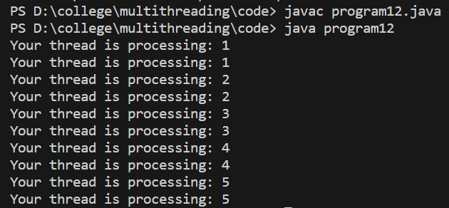
13 :-Create the program to create multiple threads, show an example of join and yield methods.
class program13 {
public static void main(String[] args) {
Thread thread1 = new Thread(new MyRunnable("Thread 1"));
Thread thread2 = new Thread(new MyRunnable("Thread 2"));
thread1.start();
thread2.start();
try {
thread1.join(); // Wait for thread1 to complete
} catch (InterruptedException e) {
e.printStackTrace();
}
System.out.println("Thread 1 completed its execution.");
// Yield control to other threads
Thread.yield();
System.out.println("Main thread continues...");
}
}
class MyRunnable implements Runnable {
private final String name;
public MyRunnable(String name) {
this.name = name;
}
public void run() {
for (int i = 0; i < 5; i++) {
System.out.println(name + ": " + i);
try {
Thread.sleep(500);
} catch (InterruptedException e) {
e.printStackTrace();
}
}
}
}
Output :-
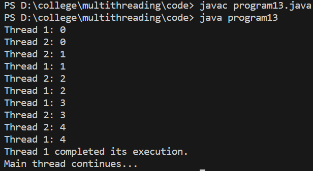